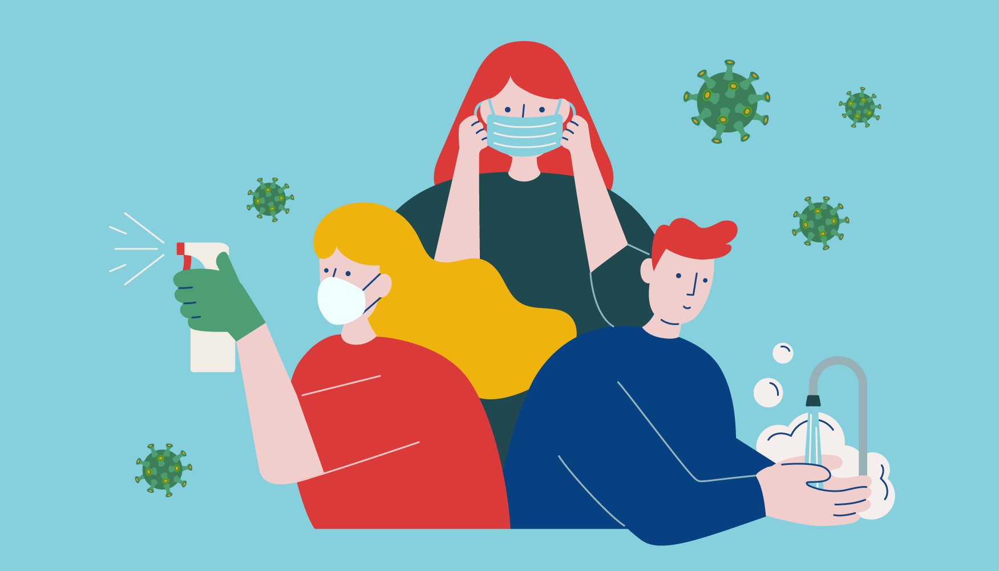
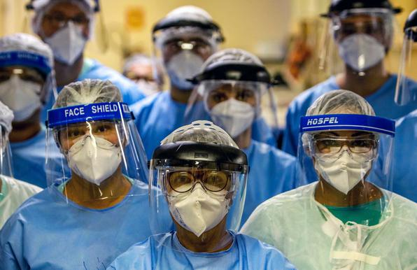
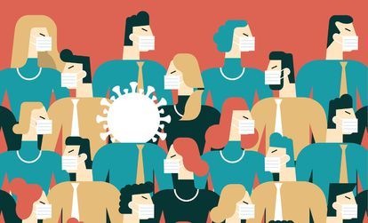

Previna-se!
As mais diversas pandemias passadas deixaram um legado na história com um número significativo de óbitos e de pessoas enfermas. Essa experiência é capaz de mostrar a necessidade de
elaboração de Planos de Preparação para Enfrentamento de Pandemias, flexíveis e capazes de dar
resposta que o problema requer.
Gestão de uma pandemia
Como uma simples atitude pode nos fazer pensar sobre nosso comportamento!
Os aspectos relacionados à gestão implicam no estabelecimento de compromissos, cadeia de comando, estruturas, organização de serviços para a execução e acompanhamento das ações planejadas tanto na fase de contenção quanto de mitigação
Apesar de se destinar ao setor saúde, O Plano Brasileiro de Preparação para Enfrentamento
de uma Pandemia aborda também os objetivos, responsabilidades, compromissos e
ações de diversos outros setores, inclusive a população, que terão que desempenhar papeis importantes por ocasião de uma pandemia na fase de contenção e de mitigação.
Orientações quanto a jornada do trabalhador x pandemia
Na maior parte das vezes o desespero consome cada um quando se trata sobre uma pandemia mundial, alías isso impacta diretamente no dia a dia do trabalhador que busca seu sustento e com isso não sabe como agir e como será seu futuro por conta desse impacto global. Todas as empresas adotam medidas de segurança que vai ajustar cada trabalhador aos parametrôs de segurança para que possam se previnir quanto a doença.



E é para isso que nós do grupo HEART UNITED estamos aqui, para ajudar a cada um com as informações sobre quais medidas e procedimentos devem ser tomados durante uma pandemia, para que o numero de pessoas desinformadas sobre o assunto possam ser alcançadas e obter uma forma correta de se previnir durante uma pandemia mundial.
Acesse nossa guia de procedimentos para obter informações quanto as prevenções e medidas que devem ser adotadas.